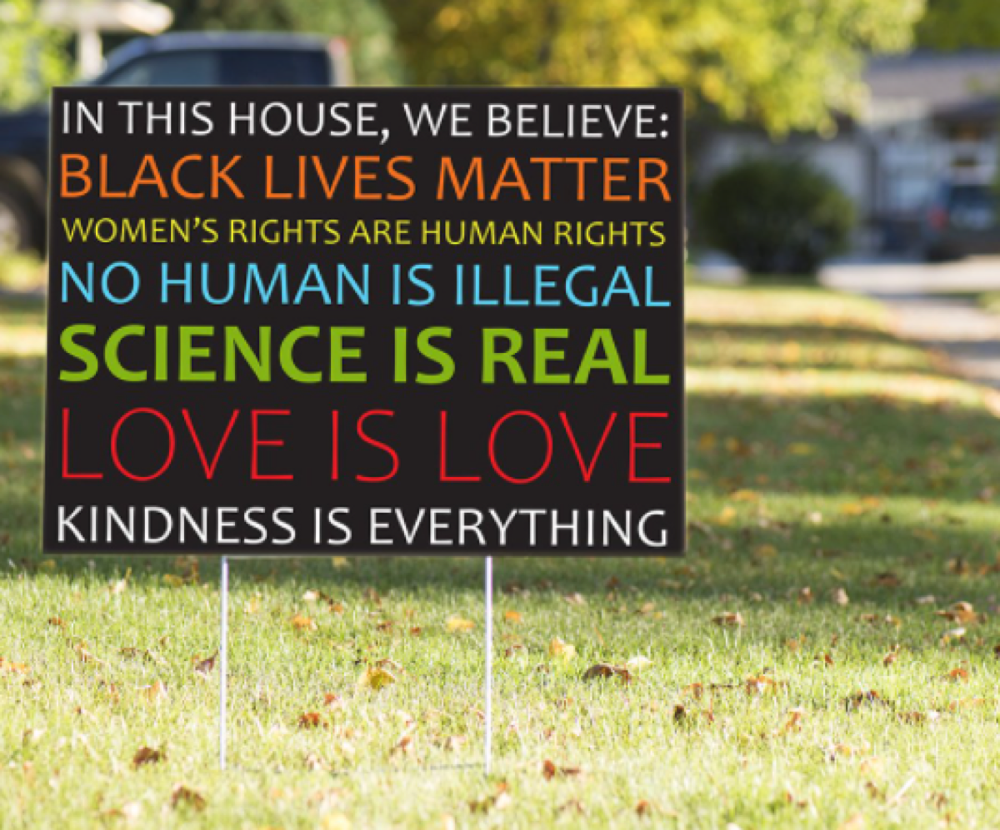

Vapid & Plastic
Take a stroll down any street in my neighborhood in Durham, which many on this blog have called the Mecca of the South, and you'll quickly notice the tell-tale sign that you're in a quickly gentrifying, liberal leaning area: the lawn signs.
Black lives matter. Science is Real. Housing is a Human Right. Stop the Steal. (Just kidding about that last one)
These signs are sometimes criticized as virtue signaling. But I'm not here to argue about lawn signs. I do believe that in the broad, middle to upper-middle class Democratic base there is a pervasive hypocrisy when it comes to political priorities espoused (often via lawn ornamentation) and the actions that defend and hoard opportunities for others. I was lucky to take a seminar from Richard Reeves of the Brookings Institute on the very subject, and he's written prodigiously regarding this very confluence of virtue signaling and policy setting. These double-standards are nearly as ubiquitous as the aforementioned lawn signs: university legacy admissions, fiscal policy such as the mortgage interest deduction, 529 plans, estate and sales tax and most recently the absurd SALT deduction — which Reeves argues should be completely eliminated — and house zoning.
I found myself wondering: are Durham zoning laws reflective of a majority Democratic enclave, a quickly growing liberal bubble? Are we, like many other cities in America, zoned predominantly for single-family households? And above all, are Durham's zoning ordinances aligned with the beliefs of all those stupid lawn signs?
Note: Durham's Comprehensive Plan is being updated, so zoning ordinances are likely to change.
EDA
I wish I could take a time machine back to a younger Jake, complaining about a problem set in his graduate quant class. Oh, is that perfectly cleaned data set provided by the professor annoying to load into your program? Is the codebook too succinct? I wouldn't hit this Jake, violence is never the answer, but I would shake him a bit.
The question we're trying to answer is to what degree is Durham's zoning amenable to non-single family homes? Using 2020 census data, we can determine the percentage of Durham-ites zoned for single or multiple family homes. Growth in households and population will be measured based on where that growth is occurring by zone type. First, we need the zone type.
Zone Types
Durham's zoning data is publicly available, and is classified in an understandably long-winded manner.
As the songbird of our generation Carly Rae Jepsen once said, let's cut to the feeling.
Let's collapse each zone into broad buckets: residential, commercial, university, downtown and compact. The last two will be treated nearly identically. Compact is a newer designed zone theorized to increase density, multimodal traffic like transit and bike lanes, and allow access to work and play in and around.